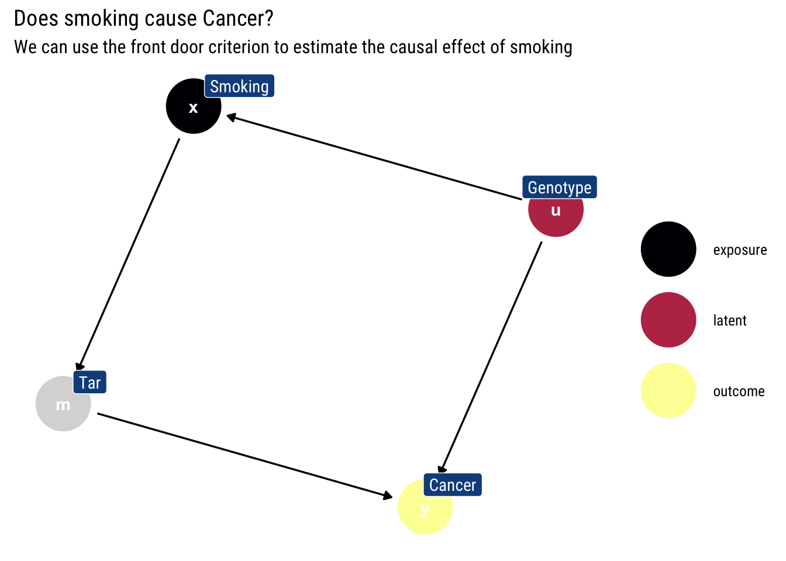
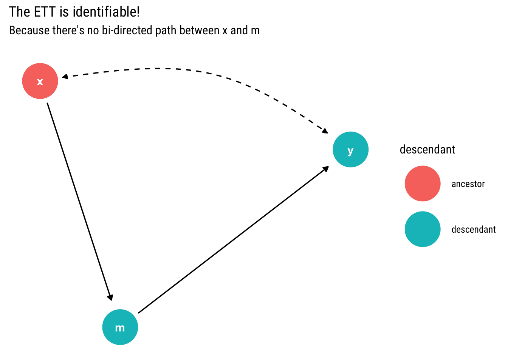
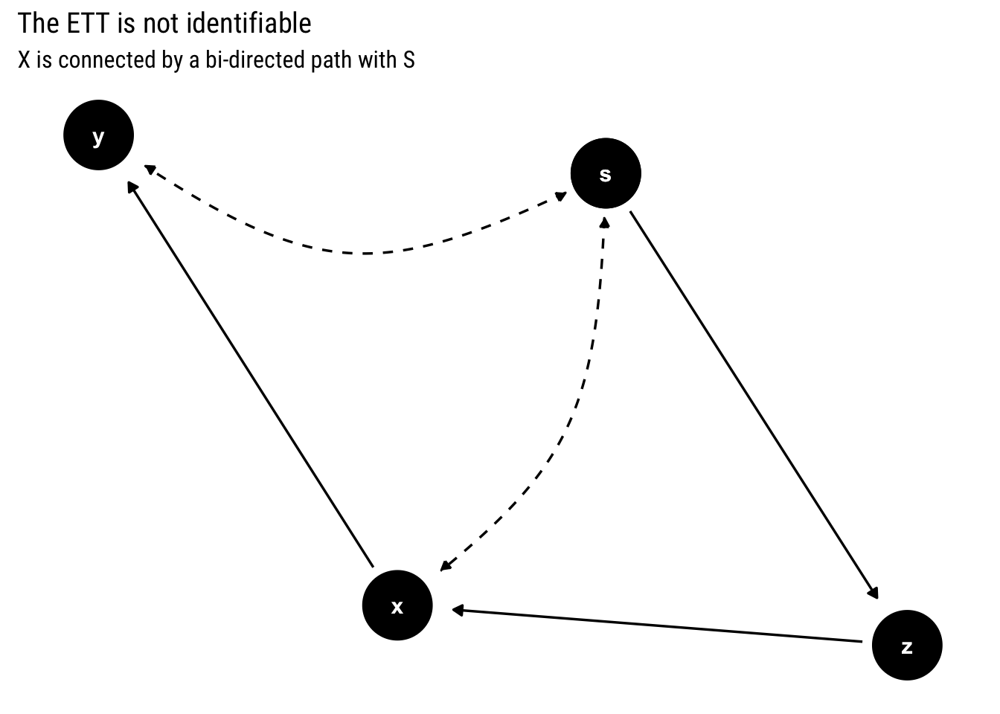

example <- dagify(x ~ u,
m ~ x,
y ~ u + m,
labels = c("x" = "Smoking",
"y" = "Cancer",
"m" = "Tar",
"u" = "Genotype"),
latent = "u",
exposure = "x",
outcome = "y")Why read this?
Regret about our actions stems from a counterfactual question: What if I had acted differently?. Therefore, to answer such question, we need a more elaborate language than the one we need to answer prediction or intervention questions. Why? Because we need to compare what happened with what would had happened if we had acted differently. We need to compute the Effect of Treatment on the Treated (ETT).
To compute the ETT, we need to formulate a Structural Causal Model and leverage the invariant qualities across the observed world and the hypothetical world: the unobserved background variables. Indeed, the definition of the Effect of Treatment on the Treated (ETT) is defined for a binary treatment thus:
\[ E[Y_1 - Y_0 | X = 1] \\ = \sum_u [P(y_1 | x_1, u) - P(y_1 | x_0, u)] P(u |x_1) \]
Of course, we don’t have access to the background variables. In this post, we will learn to answer two questions: when is the ETT identifiable? And if so, can we give an estimator for such counterfactual in terms of non-experimental data?
We will first study a binary treatment and answer both questions. Then, we will tackle the more general case of any treatment.
A Motivating binary example
The following example is taken from Pearl’s (et alter) book Causal Inference in Statistics: A primer.
Imagine an average adolescent: Joe. He has started smoking ever since he began High School. Should he regret his decision? That is, given that he has started smoking, has he significantly increased his chances of suffering from lung cancer compared to his chances had he never begun in the first place?
Therefore, what Joe cares about is the Effect of Treatment on the Treated: \(E[Cancer_1 - Cancer_0 | Smoking = 1]\). If ETT > 0, having smoked has caused a higher chance of lung cancer for Joe compared to the hypothetical world where he had never smoked in the first place. How can we calculate the ETT?
\[ \begin{aligned} E T T &=E\left[Y_{x}-Y_{x^{\prime}} \mid X=x\right] \\ &=E[Y_x \mid X=x]-E\left[Y_{x^{\prime}} \mid X=x\right] \end{aligned} \]
The challenge, thus, is to estimate the counterfactual expression \(E\left[Y_{x^{\prime}} \mid X=x\right]\)
Expressing ETT in terms of observational data and experimental data
Our treatment is binary. Therefore, let’s begin by using the law of total probability thus to write \(E[Y_x]\)
\[ E\left[Y_{x}\right]=E\left[Y_{x} \mid X=x\right] P(X=x)+E\left[Y_{x} \mid X=x^{\prime}\right] P\left(X=x^{\prime}\right) \]
We will use the consistency axiom: \(E[Y_x | X = x] = E[Y | X = x]\); that is, a counterfactual predicated on an actual observation is no counterfactual.
Therefore, we can re-write the above expression thus:
\[ E\left[Y_{x}\right]=E[Y \mid X=x] P(X=x)+E\left[Y_{x} \mid X=x^{\prime}\right] P\left(X=x^{\prime}\right) \]
In the above expression there’s only one term that cannot be computed using observational data, \(E\left[Y_{x} \mid X=x^{\prime}\right]\): the same term that causes trouble in our ETT estimation. Let’s solve for it:
\[ E\left[Y_{x} \mid X=x^{\prime}\right]=\frac{E\left[Y_{x'}\right]-E[Y \mid X=x] P(X=x)}{P\left(X=x^{\prime}\right)} \\ E\left[Y_{x} \mid X=x^{\prime}\right]=\frac{E\left[Y | do(X = X')\right]-E[Y \mid X=x] P(X=x)}{P\left(X=x^{\prime}\right)} \]
By plugging-in this term, we can express our ETT with terms that can be computed with a mix of observational and experimental data.
\[ \begin{aligned} E T T &=E\left[Y_{x}-Y_{x^{\prime}} \mid X=x\right] \\ &=E[Y \mid X=x]-E\left[Y_{x^{\prime}} \mid X=x\right] \\ &=E[Y \mid X=x]-\frac{E\left[Y \mid d o\left(X=x^{\prime}\right)\right]-E\left[Y \mid X=x^{\prime}\right] P\left(X=x^{\prime}\right)}{P(X=x)} \end{aligned} \]
Therefore, if the treatment is binary, whenever the causal effect of \(X\) can be identified, the ETT can also be identified.
Going back to Joe
Let’s go back to our motivating example. We can express the ETT using the above derivation:
\[ \begin{aligned} E T T &=E\left[Y_{1}-Y_{0} \mid X=1\right] \\ &=E[Y \mid X=1]-E\left[Y_{0} \mid X=1\right] \\ &=E[Y \mid X=1]-\frac{E[Y \mid d o(X=0)]-E[Y \mid X=0] P(X=0)}{P(X=1)} \end{aligned} \]
Thus, we can estimate the ETT with only observational data if we can estimate \(E[Y \mid d o(X=0)]\) with observational data. Given that we know that we cannot estimate causal effects without making causal assumptions, let’s formulate ours.
Let’s say that our causal DAG for the effects of Smoking on Cancer is the following:

Therefore, we can use the front-door formula to estimate the causal effect of smoking: \(E\left[Y \mid d o\left(X=x^{\prime}\right)\right]\).
Suppose, then, that we collect the following data:

Then, using the front-door criterion, the causal effect \(E[Y \mid d o(X=0)]\) is:
\[ \begin{aligned} E[Y \mid d o(X=0)]=& \sum_{z} P(Z=z \mid X=0) \sum_{x^{\prime}} P\left(Y=1 \mid X=x^{\prime}, Z=z\right) P\left(X=x^{\prime}\right) \\ =& P(Z=1 \mid X=0)[P(Y=1 \mid X=1, Z=1) P(X=1)\\ &+P(Y=1 \mid X=0, Z=1) P(X=0)] \\ &+P(Z=0 \mid X=0)[P(Y=1 \mid X=1, Z=0) P(X=1)\\ &+P(Y=1 \mid X=0, Z=0) P(X=0)] \\ =& 20 / 400 *[0.15 * 0.5+0.95 * 0.5]+380 / 400 *[0.1 * 0.5+0.9 * 0.5] \\ =& 0.5025 \end{aligned} \]
Finally, we can calculate the ETT for Joe:
[ \[\begin{aligned} E T T &=E\left[Y_{1}-Y_{0} \mid X=1\right] \\ &=E[Y \mid X=1]-E\left[Y_{0} \mid X=1\right] \\ &=E[Y \mid X=1]-\frac{E[Y \mid d o(X=0)]-E[Y \mid X=0] P(X=0)}{P(X=1)} \\ &=0.15-\frac{0.5025-0.9025 * 0.5}{0.5} \\ &=0.0475>0 \end{aligned}\]]
Therefore, given that \(ETT>0\), by smoking Joe has increased his chances of suffering from Cancer. Thus, he should feel regret: the causal effect smoking has had in his life has been to increase his chances of suffering from cancer, relative to those chances in the hypothetical world where he never smoked in the first place.
The more general case
Let’s say that our treatment is discrete, but not binary. Is the Effect of Treatment on the Treated (ETT) identifiable? Pearl and Shipster have given an answer to this question using C-components
Identifiability using C-components
Remember, two variables are assigned to the same c-component iff they are connected by a bi-directed path. The c-components themselves induce a factorization of the joint probability distribution in terms of c-factors: post-intervention distribution of the variables in the respective c-component under an intervention on all the other variables.
Just as before the causal effect was identified when \(X\) and its children are in different C-components (i.e., there’s no bi-directed path between \(X\) and its children that are also ancestors of \(Y\)), the necessary counterfactual expression to compute the ETT, \(P(Y_x = y|x')\), is identifiable if and only if \(X\) and its children are in different C-components.
Indeed, whereas before (when we were trying to estimate the causal effect) we summed out \(x\) from the c-factor, we now replace \(x\) by \(x'\) from the c-factor and divide by \(P(x')\). Then, we take the decomposition induced by the c-factors and marginalize and condition on the appropriate variables to get the variable of interest.
That is, the same test is a sufficient test for causal effects identifiability and both a necessary and sufficient test for ETT identifiability.
Confirming our former result
Let’s take our former example of the causal model of Smoking on Cancer. This time, we will use bi-directed paths to show that there’s an unobserved confounder:
example <- dagify(x ~~ y,
m ~ x,
y ~ m)tidy_dagitty(example, layout = "nicely", seed = 2) %>%
node_descendants("x") %>%
mutate(linetype = if_else(direction == "->", "solid", "dashed")) %>%
ggplot(aes(x = x, y = y, xend = xend, yend = yend, edge_linetype = linetype, color = descendant)) +
geom_dag_edges(aes(end_cap = ggraph::circle(10, "mm"))) +
geom_dag_point() +
geom_dag_text(col = "white") +
labs(title = "The ETT is identifiable!",
subtitle = "Because there's no bi-directed path between x and m")
Since \(X\) has no bi-directed path to its child \(m\), the counterfactual query \(P(Y_x = y | x')\) is identifiable. Thus, the ETT is identifiable; confirming what we have done until now.
However, if it were not binary, we could derive an estimator for the ETT using the induced factorization by the c-components. First, we replace with \(x'\) in the c-component where \(x\) is:
\[ P(x, y | do(m)) = P(y|m, x') P(x') \]
Whereas the other c-component is
\[ P(m| do(y, x)) = P(m| do(x)) = P(m|x) \]
Therefore, the conditional distribution on \(x'\)
Conditioning on \(x'\) and marginalizing \(m\):
\[ P(y_x | x') = (\sum_z P(y| z, x') P(x') P(z | x))/(P(x')) \]
That is, we replace \(x\) with \(x'\) in the c-component where \(x\) is, we condition on \(x'\) by dividing the joint density and marginalize \(m\). Thus, we derive the estimator for the ETT in this model by using the c-factors.
Not identifiable
Now let’s work with an example where the causal effect is identifiable, yet the counterfactual query \(P(Y_x = y | x')\) is not.
example_not <- dagify(s ~~ y,
x ~~ s,
x ~ z,
z ~ s,
y ~ x
)tidy_dagitty(example_not, layout = "nicely", seed = 2) %>%
mutate(linetype = if_else(direction == "->", "solid", "dashed")) %>%
ggplot(aes(x = x, y = y, xend = xend, yend = yend, edge_linetype = linetype)) +
geom_dag_edges(aes(end_cap = ggraph::circle(10, "mm"))) +
geom_dag_point() +
geom_dag_text(col = "white") +
labs(title = "The ETT is not identifiable",
subtitle = "X is connected by a bi-directed path with S")
Conclusions
We’ve seen how regret is logically defined in terms of the Effect of Treatment on the Treated (ETT). We’ve also realized what are the conditions for the ETT to be identifiable and how to derive an estimator for it in terms of observational data.